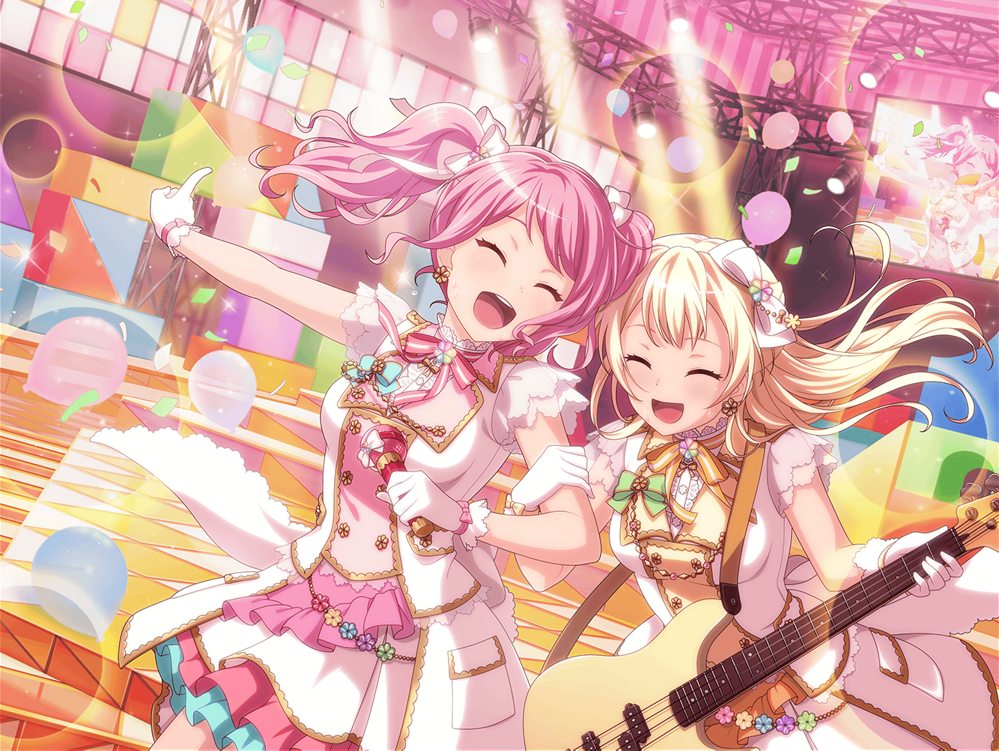

学校帰り
CiRCLE前 カフェ
彩
ライブも終わったし、今日くらいは
少しゆっくりしてもいいよね
彩
わ！ 新作のレモンタルト……！？ お、おいしそう……
彩
けど、ケーキ食べてるところ、千聖ちゃんに見つかったら、
また怒られちゃうよね……
彩
……
彩
……き、今日くらいは……いい、よね……？
日菜
あー、あー……『丸山さん！ まだBメロが苦手なんですか？』
ふふーん♪ おねーちゃんのマネ、おもしろいなー
日菜
……お！ あんなところに彩ちゃんが！
ちょうどいいや、ちょっと試してみよーっと
彩
ふんふーん♪
新作ケーキにホットティー♪
ライブがんばった自分へのご褒美！
彩
ん〜、おいしーっ！
甘さ控えめだし、これなら千聖ちゃんに見つかっても
許してもらえ……
？？？
丸山さん！
彩
は、はいっ！？
日菜
あやちゃ……丸山さん、また買い食いですか？
彩
さ、紗夜ちゃん！？ どうしてここに……
日菜
通学路を見回るのは風紀委員として当然のことです！
こんなところで買い食いなんて、感心しませんね
彩
ううっ、ごめんなさい……
これは自分へのご褒美で……
日菜
甘いものは控えるように、ちさ……白鷺さんから
いつも言われているんじゃないですか？
彩
うええっ！？ 紗夜ちゃん、そんなことまで
知ってるの……？ ううっ、今日だけは見逃して〜！
日菜
ダメです。今日は見逃せません。
このことは、パスパレのメンバーに報告します
彩
えっ！？ が、学校じゃなくてパスパレのメンバーにするの？
日菜
そのほうが、るんっ♪ とくるじゃないですか
彩
る、るんっ……？ 紗夜ちゃんも、るんっとか言うんだ
千聖
あら？ 彩ちゃん。こんなところでどうしたの？
イヴ
そのお隣は、ヒナさん……ですね？
彩
あっ、千聖ちゃん、イヴちゃん！
日菜ちゃん、ってどういうこと？ ……まさか！
日菜
あははー。二人の目はごまかせなかったか〜
イヴ
私もヒナさんのシノビの術を見破ることができました！
日菜
さっすがー！ どのへんであたしだってわかったの？
イヴ
どのへんというか……うーん……
遠目から見ても、すぐにヒナさんだとわかるくらいでしたよ
麻弥
ジブンも遠目から見てすぐにわかりましたよ！
彩
麻弥ちゃんまで〜！？
うう、気づかなかったのは私だけかあ……
彩
風紀委員としての紗夜ちゃんに注意されて、
ついついテンパっちゃったのかも
千聖
ふふ。彩ちゃんにとって、それだけケーキを食べることが
やましいことだったのね
彩
うっ……
日菜
あっはは！ 彩ちゃん、悪い子だな〜
彩
き、今日くらいはいいかなって……
千聖
その『今日くらい』が積み重なるとどうなるか
わかっているの？
彩
はい……
日菜
ホントにわかってるー？
あ、それとは別にさー、彩ちゃん！
彩
え？ まだ何かあるの……？
日菜
あたしのおねーちゃんのマネ、
全然似てないって言ったの、謝ってもらおうかな〜
麻弥
確かに、今日の彩さんは、すっかり騙されちゃってましたね
イヴ
ヒナさん、お見事です！
千聖
ついでに、ケーキの件ももっとしっかり反省してもらわなくちゃ
彩
ううっ……千聖ちゃん、日菜ちゃん、
ごめんってば〜！！